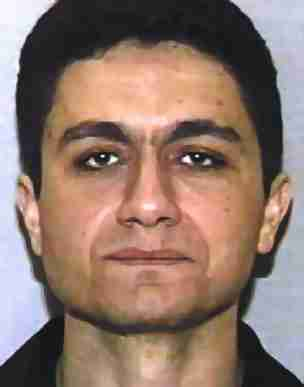

A pilot's strange encounter with Atta at Boston Airport
Sunday, April 24, 2011

The following is the official paraphrased statement of an American Airlines pilot, interviewed by the FBI on October 13th, 2001. The witness describes how she was shortly approached by Mohammed Atta inside the AA terminal at Logan Airport. Her account is detailed, credible, and intriguing.Lynn Marie Florence Howland
, First Officer, American Airlines, AA, was interviewed near her home at a Starbucks Café in ................... She was advised of the identity of the interviewing agent and nature of the interview. For identification, she advised that she lives and .............................. and has been with American Airlines for eleven years.
Howland explained to the interviewing agent that she has been out of state for several days flying in her job. To assist her recollection she prepared a type written one page chronology of the events regarding the encounter with a person she thought was the suspected hijacker of AA Flight 11 on the morning of September 11, 2001. She advised that she was extremely tired after her flight. She left her home at approximately 10:00 a.m. all times local on the morning of September 10th, flew down to San Francisco to then fly as first officer for the AA red-eye flight from San Francisco to Boston. Checking a dispatch schedule, she indicated she flew AA flight 198 from San Francisco, California to Boston, Massachusetts. She indicated the flight had a 9:50 p.m. departure, with arrival at Logan Airport, Boston at approximately 6:50 a.m. on the morning of September 11th. The equipment was a Boeing 767. She advised that the captain was
Douglas Balmain
. She was sure that the arrival gate for her flight 198 was Bravo 33. Subsequently she checked with AA dispatch and was told her flight AA 198 became the hijacked AA flight 11.
After almost everyone had deplaned, she went up the jetway ahead of Captain Balmain. She stated as she was standing near the entrance to the jetway, in the passenger lounge, a male individual comes up to her suddenly and asks if she is going to take this plane out, referring to the flight she just brought in. She said no and he abruptly turned and went and sat down. She thought that was extremely rude. Her first impression was that he was a pilot going to fly in the jump seat. While he wasn't in uniform, he may have been wearing a pilot type shirt, open collar. She thought he may have had a rolling pilot flight kit or bag with him, which she described as black vinyl, round top, and incredibly cheap. Again she could not recall anything else, only at that time wanting to get to the hotel and sleep. She said she was so tired, when she got to her hotel room she crashed in bed, in her uniform. She woke up about one p.m. and then found out about the terrorist attacks. She said for the longest time she wasn't even sure that she was dreaming it all, until she saw photographs of the hijackers in the news, she was instantly sure that the indivdual she saw that morning was the suspected hijacker,
Mohammed Atta
. She added that when she first saw the pictures of the hijackers in the new media, it was like an electric shock when she saw the picture of Atta.She described the individual she saw that morning as having dark hair, dark eyes and being approximately five feet, eight inches in height. Because she was so tired and just wanted to get to the hotel, she could not recall much, other than he may have had that cheap pilot flight bag. She could not recall anything else and stated that time she had no reason to notice. She did not think that Captain Balmain would have noticed him. As she explained in her notes, the recollection .... (??? - missing text)
She was shown a photo spread of six males and instantly chose number 5, which is the terrorist described as Mohammed Atta. She then signed and dated the photo spread under photograph number five. She said that her selection was based totally on her recollection of the morning of September 11th and not from any subsequent photographs she may have seen in the news.
The following are Howland's notes, prepared prior to the interview and scanned directly into this FD-302 and corrected only for scanning errors:
"Flew flight 198 SF-BOS
Departed September 10
Arrived September 11
On the ground approximately 0650 EST
In gate probably at 0700 EST
I left the cockpit first and waited for the captain at the top of the jetbridge in the boarding area.
He was slower maybe 5-7 minutes behind me.
We went to the hotel. I went to sleep called my parents at 1300 EST and they told me what happened.
Later that day I realized it was the aircraft that I had brought in.
That is what I remembered until I saw the photos on TV.
I was instantly sure I have seen Mohammed Atta before could not remember where.
Two days later I was driving my car in at night in the rain and my thoughts were drifting to the horrible loss. I suddenly had a memory of a man approaching me and asking me if I was taking the flight out. I was stunned. Did this really happen? I thought about it some more and remembered Mohammed Atta approaching me and asking me if I was taking flight 11 out. I said "No, I just brought the aircraft in." He turned his back and abruptly walked away and I was a little annoyed with his rudeness but as it was 0400 body clock time I let it go and told myself that people are rude everyday.
This would have been between 0700 and 0720 EST. I think he was wearing a white pilot type or oxford shirt, no tie and blue pilot type slacks. I am unsure about the shirt but perhaps that was what the man he sat down next to was wearing. I also remember him having a really cheap pilot bag. The vinyl one with a rounded top with black plastic squares at the corners.
I spent 2 days trying to decide of this was a true memory and decided it was. I have decided to share this because I felt it was my civic duty."
http://www.scribd.com/doc/14094195/T7-B11-FBI-302s-Cockpit-and-American-and-Hijacker-Fdr-FBI-302-S-Entire-Contents
This statement creates a huge problem for the official Atta story: According to the BTS database and other sources, it was about 6:00 a.m. EDT when Flight 198 arrived at the gate, not 7:00 EST.
(This is a minor mistake of West Coast resident Lynn Howland and in no way damages the accuracy of her other recollections.) Just at this time, a man identifying himself as Mohammed Atta boarded a Colgan Air flight in Portland, Maine, going to Boston. He did not arrive there before 6:45 EDT.
Conclusion: the "Mohammed Atta" whose face was presented on the news in the days after 9/11 and the "Mohammed Atta" in the blue shirt recorded by a security camera at Portland Airport are not the same person. This confirms the outstanding research of John Doe II who has collected plenty of evidence for the existence of - at least - one double of Atta:http://johndoeii.blog.com/2011/03/29/mohammed-atta
{kind=link}
{kind=link}